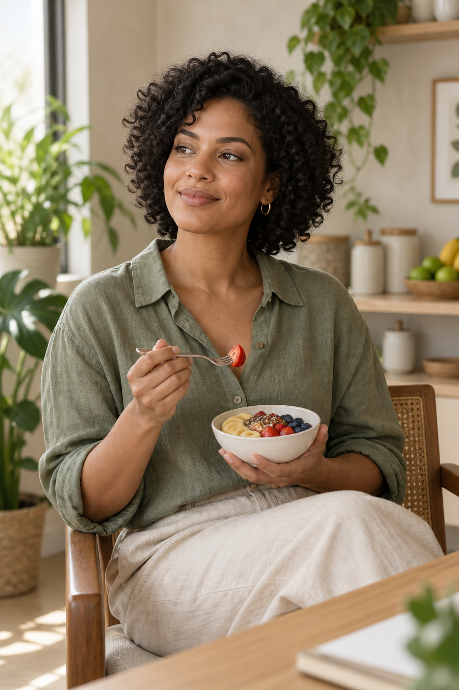

Nutrição clínica
Um olhar atento para saúde, exames, rotina e prevenção, com orientações construídas para o seu contexto.
Projeto conceitual · nutrição clínica e esportiva
Uma proposta fictícia de atendimento nutricional, desenvolvida como estudo visual para portfólio.
Profissional, imagens e dados fictícios
Atendimento individualizado
Sua alimentação precisa caber na agenda, nas preferências e no momento em que você está. O plano nasce dessa conversa, sem fórmulas prontas ou restrições genéricas.
Um olhar atento para saúde, exames, rotina e prevenção, com orientações construídas para o seu contexto.
Estratégias para apoiar energia, recuperação e desempenho de acordo com seu treino e seus objetivos.
Escolhas sustentáveis para criar consistência e construir uma relação mais tranquila com a comida.

Sobre o conceito
“A nutrição precisa fazer sentido fora do consultório. Este texto e esta profissional fazem parte de uma proposta visual fictícia, criada para demonstrar linguagem, estrutura e direção de arte.”Perfil e imagens criados para portfólio
Como funciona
Você escolhe a modalidade e o melhor horário para a consulta.
Conversamos sobre rotina, alimentação, saúde e o que você quer alcançar.
As orientações são definidas com base no que faz sentido para você.
Resultados, dificuldades e rotina orientam os ajustes ao longo do processo.
Cada orientação é adaptada à sua realidade, rotina e objetivos.
Onde você estiver
Consulta presencial
Endereço ilustrativo para demonstrar a hierarquia da informação e a experiência de escolha de modalidade.
Ver conceitoConsulta online
Conteúdo de exemplo para apresentar a modalidade à distância e a organização da página em um cenário fictício.
Ver conceitoDúvidas frequentes
Não. O atendimento também contempla saúde, prevenção, rotina alimentar e melhora da relação com a comida. A estratégia parte das suas necessidades.
A consulta acontece por videochamada. Você recebe as orientações de forma digital e combina os próximos passos do acompanhamento com a nutricionista.
Quando indicado, o plano alimentar é personalizado com base na consulta, na sua rotina, nas preferências e nos objetivos definidos em conjunto.
A frequência é definida de forma individual. Ela depende dos seus objetivos, do momento do acompanhamento e dos ajustes necessários.
Este é um protótipo de portfólio, portanto não há canais reais de agendamento nem contatos associados.
Projeto conceitual para portfólio. Marina Avelar, os textos, os dados e as imagens apresentados nesta página são fictícios.